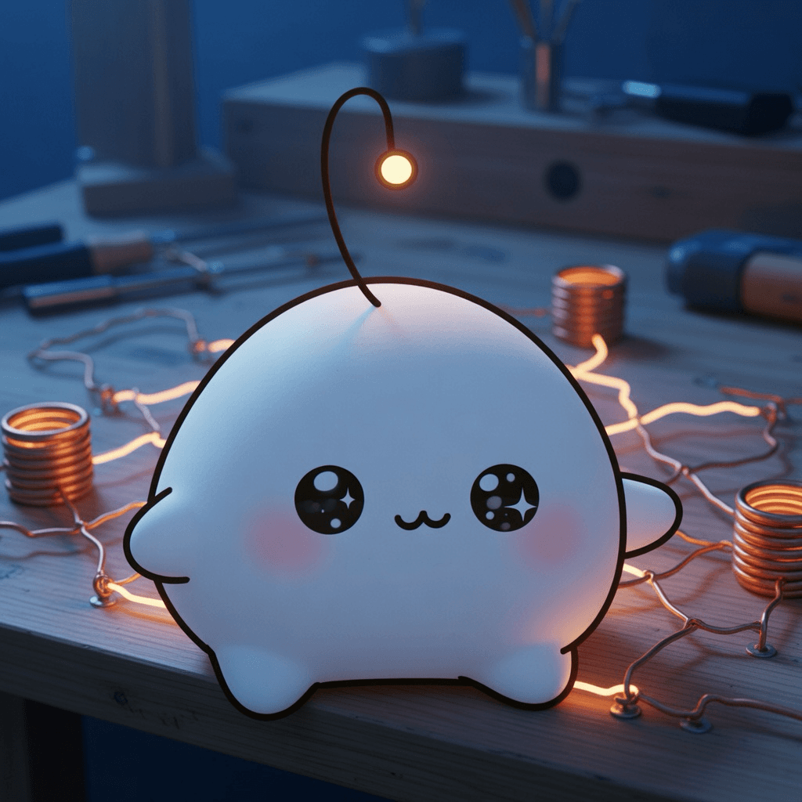

September 16, 2026
September 16, 2026

Inspiration
Nvidia announces native GPU programming in Rust
A grid of small processors, each one doing almost nothing, and together moving something no single core could. The trick is never the lightning — it's the wiring between neighbors, the whisper that lets a thousand quiet habits add up to speed.
Training a 4B model to produce 81% faster query plans than Postgres
A small model beating a large one not by knowing more, but by noticing better. Speed here is patience practiced until it looks like instinct — the plan chosen by a mind that has stared at the same problem long enough to recognize its shape.
Small programming tricks
The tricks that matter are the ones small enough to fit in a sentence and old enough to have been forgotten twice. Craft is this: noticing what was always there, and letting the noticing accumulate until it warms the whole bench.